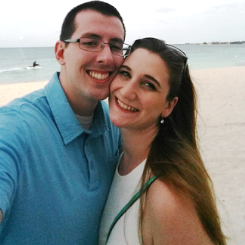
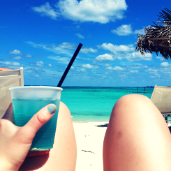
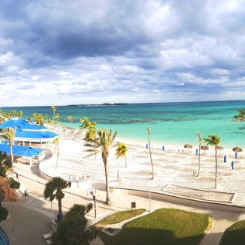

Keeley and Kevin spent their 2017 spring break sleeping in, swimming with dolphins, and relaxing by the beach and pool in Nassau, Bahamas. This website is a blog about all of their spring break Bahamas adventures!
Monday was a very long day. We woke up at 5:00am, quickly showered, got an Uber, and headed to Boston Logan Airport for our 8:30am flight to Pittsburgh, PA. We probably didn't need to get up and going so early because it only took 10 minutes to get our bag checked and get through security. We had an hour and a half to kill before boarding. We got some coffee and breakfast and waited patiently for our first flight...
Tuesday
March 14, 2017

We woke up Tuesday morning around 9:00am and promptly changed and headed down to get breakfast. We ate breakfast seaside. The restaurant had every breakfast food you could ever imagine from simple toast to fancy customized omelets to blueberry blintzes and everything in between. I think we both ate our weight in food that morning...
Wednesday
March 15, 2017
We woke up at 6:30am in order to have enough time to eat breakfast, pack for the day, and catch our 7:30am bus to Atlantis. I didn't imagine we'd have to wake up so early while on vacation, but it was so worth it.
The bus ride to Atlantis took a while because of traffic, but it was nice to see all of the Bahamian architecture and downtown Nassau along the route. Atlantis is on Paradise Island, which is separate from mainland Nassau, so we could see it from afar during the entire ride...
Thursday
March 16, 2017

We slept in again on Thursday and then did the same thing as the past two days - ate delicious breakfast by the beach.
Once we were done with breakfast, we changed into bathing suits, got some drinks, found some nice lounge chairs on the beach, and spent most of the day just relaxing on the beach. We read books, napped, talked, and generally just enjoyed being together. Of course, we also went swimming in the ocean a few times...
Friday
March 17, 2017

This was our last day in the Bahamas and surprisingly, we were looking forward to coming home. We'd had a ton of fun, but I missed my job and we both missed our cat and our bed.
Per usual, we woke up and had a nice seaside breakfast. We then went back to the room to shower, pack, and get dressed. Since our flight wasn't until 3pm, we wore clothing appropriate for the Bahamas, but kept a change of winter clothes in our backpacks so we could change before leaving the hotel...